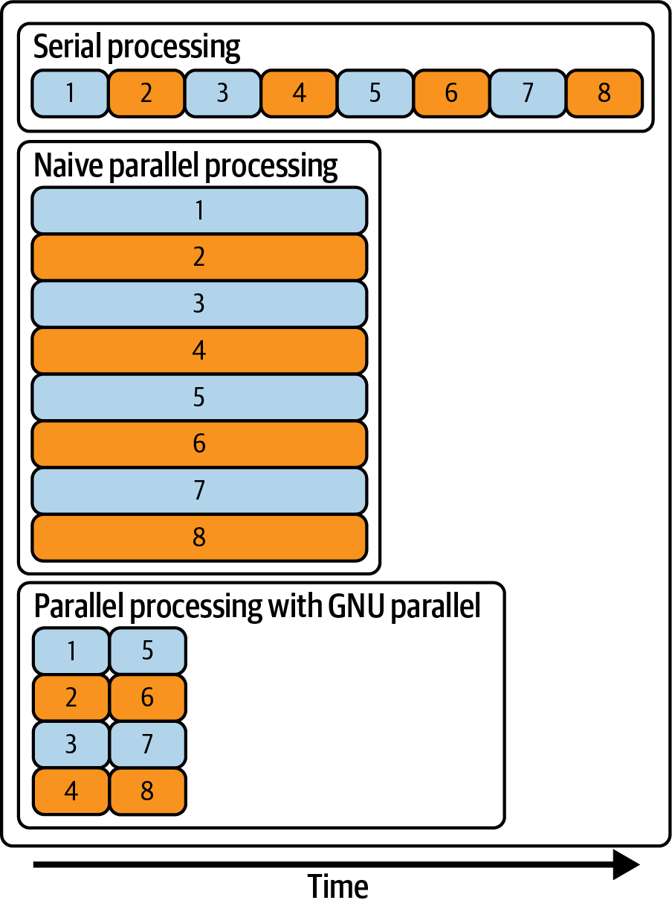
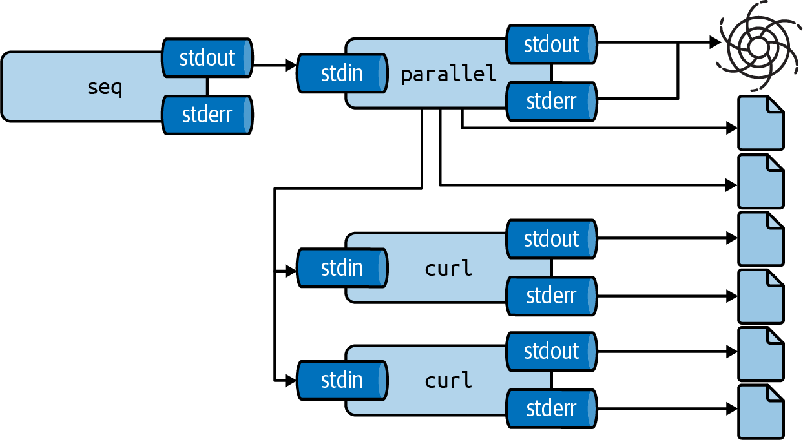

8 Parallel Pipelines
In the previous chapters, we’ve been dealing with commands and pipelines that take care of an entire task at once. In practice, however, you may find yourself facing a task which requires the same command or pipeline to run multiple times. For, example, you may need to:
- Scrape hundreds of web pages
- Make dozens of API calls and transform their output
- Train a classifier for a range of parameter values
- Generate scatter plots for every pair of features in your dataset
In any of the above examples, there’s a certain form of repetition involved. With your favorite scripting or programming language, you take care of this with a for loop or a while loop. On the command line, the first thing you might be inclined to do is to press Up to bring back the previous command, modify it if necessary, and press Enter to run the command again. This is fine for two or three times, but imagine doing this dozens of times. Such an approach quickly becomes cumbersome, inefficient, and prone to errors. The good news is that you can write such loops on the command line as well. That’s what this chapter is all about.
Sometimes, repeating a fast command one after the other (in a serial manner) is sufficient. When you have multiple cores (and perhaps even multiple machines) it would be nice if you could make use of those, especially when you’re faced with a data-intensive task. When using multiple cores or machines, the total running time may be reduced significantly. In this chapter I will introduce a very powerful tool called parallel1 that can take care of exactly this. It enables you to apply a command or pipeline for a range of arguments such as numbers, lines, and files. Plus, as the name implies, it allows you to run your commands in parallel.
8.1 Overview
This intermezzo chapter discusses several approaches to speed up tasks that require commands and pipelines to be run many times. My main goal is to demonstrate to you the flexibility and power of parallel. Because this tool can be combined with any other tool discussed in this book, it will positively change the way you use the command line for data science. In this chapter, you’ll learn about:
- Running commands in serial to a range of numbers, lines, and files
- Breaking a large task into several smaller tasks
- Running pipelines in parallel
- Distributing pipelines to multiple machines
This chapter starts with the following files:
cd /data/ch08
l
total 20K
-rw-r--r-- 1 dst dst 126 Nov 26 11:57 emails.txt
-rw-r--r-- 1 dst dst 61 Nov 26 11:57 movies.txt
-rwxr-xr-x 1 dst dst 125 Nov 26 11:57 slow.sh*
-rw-r--r-- 1 dst dst 5.1K Nov 26 11:57 users.jsonThe instructions to get these files are in Chapter 2. Any other files are either downloaded or generated using command-line tools.
8.2 Serial Processing
Before I dive into parallelization, I’ll briefly discuss looping in a serial fashion. It’s worthwhile to know how to do this because this functionality is always available, the syntax closely resembles looping in other programming languages, and it will really make you appreciate parallel.
From the examples provided in the introduction of this chapter, we can distill three types of items to loop over: numbers, lines, and files. These three types of items will be discussed in the next three subsections, respectively.
8.2.1 Looping Over Numbers
Imagine that you need to compute the square of every even integer between 0 and 100. There’s a tool called bc2, which is a basic calculator where you can pipe an equation to. The command to compute the square of 4 looks as follows:
echo "4^2" | bc
16For a one-off calculation, this will do. However, as mentioned in the introduction, you would need to be crazy to press Up, change the number, and press Enter 50 times! In this case it’s better to let the shell do the hard work for you by using a for loop:
for i in {0..100..2} ➊
do
echo "$i^2" | bc ➋
done | trim
0
4
16
36
64
100
144
196
256
324
… with 41 more lines- The Z shell has a feature called brace expansion, which transforms
{0..100..2}into a list separated by spaces:0 2 4 … 98 100. The variableiis assigned the value “0” in the first iteration, “1” in the second iteration, and so forth. - The value of this variable can be used by prefixing it with a dollar sign (
$). The shell will replace$iwith its value beforeechois being executed. Note that there can be more than one command betweendoanddone.
Although the syntax may appear a bit odd compared to your favorite programming language, it’s worth remembering this because it’s always available in the shell. I’ll introduce a better and more flexible way of repeating commands in a moment.
8.2.2 Looping Over Lines
The second type of items you can loop over are lines. These lines can come from either a file or from standard input. This is a very generic approach because the lines can contain anything, including: numbers, dates, and email addresses.
Imagine that you’d want to send an email to all your contacts. Let’s first generate some fake users using the free Random User Generator API:
curl -s "https://randomuser.me/api/1.2/?results=5&seed=dsatcl2e" > users.json
< users.json jq -r '.results[].email' > emails
bat emails
───────┬────────────────────────────────────────────────────────────────────────
│ File: emails
───────┼────────────────────────────────────────────────────────────────────────
1 │ selma.andersen@example.com
2 │ kent.clark@example.com
3 │ ditmar.niehaus@example.com
4 │ benjamin.robinson@example.com
5 │ paulo.muller@example.com
───────┴────────────────────────────────────────────────────────────────────────You can loop over the lines from emails with a while loop:
while read line ➊
do
echo "Sending invitation to ${line}." ➋
done < emails ➌
Sending invitation to selma.andersen@example.com.
Sending invitation to kent.clark@example.com.
Sending invitation to ditmar.niehaus@example.com.
Sending invitation to benjamin.robinson@example.com.
Sending invitation to paulo.muller@example.com.- In this case you need to use a while loop because the Z shell does not know beforehand how many lines the input consists of.
- Although the curly braces around the line variable are not necessary in this case (since variable names cannot contain periods), it’s still good practice.
- This redirection can also be placed before
while.
You can also provide input to a while loop interactively by specifying the special file standard input /dev/stdin. Press Ctrl-D when you are done.
while read line; do echo "You typed: ${line}."; done < /dev/stdin
one
You typed: one.
two
You typed: two.
three
You typed: three.This method, however, has the disadvantage that, once you press Enter, the commands between do and done are run immediately for that line of input. There’s no turning back.
8.2.3 Looping Over Files
In this section I discuss the third type of item that we often need to loop over: files.
To handle special characters, use globbing (i.e., pathname expansion) instead of ls3:
for chapter in /data/*
do
echo "Processing Chapter ${chapter}."
done
Processing Chapter /data/ch02.
Processing Chapter /data/ch03.
Processing Chapter /data/ch04.
Processing Chapter /data/ch05.
Processing Chapter /data/ch06.
Processing Chapter /data/ch07.
Processing Chapter /data/ch08.
Processing Chapter /data/ch09.
Processing Chapter /data/ch10.Just as with brace expansion, the expression /data/* is first expanded into a list by the Z shell before it’s being processed by the for loop.
A more elaborate alternative to listing files is find4, which:
- Can traverse down directories
- Allows for elaborate searching on properties such as size, access time, and permissions
- Handles special characters such as spaces and newlines
For example, the following find invocation lists all files located under the directory /data that have csv as extension and are smaller than 2 kilobyte:
find /data -type f -name '*.csv' -size -2k
/data/ch03/tmnt-missing-newline.csv
/data/ch03/tmnt-with-header.csv
/data/ch03/tmnt-basic.csv
/data/ch07/datatypes.csv
/data/ch05/names.csv
/data/ch05/names-comma.csv
/data/ch05/irismeta.csv8.3 Parallel Processing
Let’s say that you have a very long running tool, such as the one shown here:
bat slow.sh
───────┬────────────────────────────────────────────────────────────────────────
│ File: slow.sh
───────┼────────────────────────────────────────────────────────────────────────
1 │ #!/bin/bash
2 │ echo "Starting job $1" | ts ➊
3 │ duration=$((1+RANDOM%5)) ➋
4 │ sleep $duration ➌
5 │ echo "Job $1 took ${duration} seconds" | ts
───────┴────────────────────────────────────────────────────────────────────────ts5 adds a timestamp.- The magic variable
RANDOMcalls an internal Bash function that returns a pseudorandom integer between 0 and 32767. Taking the remainder of the division of that integer by 5 and adding 1 ensures that duration is between 1 and 5. sleeppauses execution for a given number of seconds.
This process probably doesn’t take up all the available resources. And it so happens that you need to run this command a lot of times. For example, you need to download a whole sequence of files.
A naive way to parallelize is to run the commands in the background. Let’s run slow.sh three times:
for i in {A..C}; do
./slow.sh $i & ➊
done
[2] 172 ➋
[3] 173
[4] 174
Nov 26 11:57:54Nov 26 11:57:54 Starting job A
Starting job B
Nov 26 11:57:54 Starting job C
Nov 26 11:57:55 Job B took 1 seconds
[3] - done ./slow.sh $i
Nov 26 11:57:56 Job A took 2 seconds
[2] - done ./slow.sh $i
Nov 26 11:57:59 Job C took 5 seconds
[4] + done ./slow.sh $i
- The ampersand (
&) sends the command to the background, allowing the for loop to continue immediately with the next iteration. - This line shows the job number given by the Z shell and the process ID, which can be used for more fine-grained job control. This topic, while powerful, is beyond the scope of this book.
Keep in mind that not everything can be parallelized. API calls may be limited to a certain number, or some commands can only have one instance.
Figure 8.1 illustrates, on a conceptual level, the difference between serial processing, naive parallel processing, and parallel processing with GNU Parallel in terms of the number of concurrent processes and the total amount of time it takes to run everything.

There are two problems with this naive approach. First, there’s no way to control how many processes you are running concurrently. If you start too many jobs at once, they could be competing for the same resources such as CPU, memory, disk access, and network bandwidth. This could lead to a longer time to run everything. Second, it’s difficult to tell which output belongs to which input. Let’s look at a better approach.
8.3.1 Introducing GNU Parallel
Allow me to introduce parallel, a command-line tool that allows you to parallelize and distribute commands and pipelines. The beauty of this tool is that existing tools can be used as they are; they do not need to be modified.
Be aware that there are two command-line tools with the name parallel. If you’re using the Docker image then you already have the correct one installed. Otherwise, you can check that you have the correct one by running parallel --version. It should say “GNU parallel.”
Before I go into the details of parallel, here’s a little teaser to show you how easy it is to replace the for-loop from earlier:
seq 0 2 100 | parallel "echo {}^2 | bc" | trim
0
4
16
36
64
100
144
196
256
324
… with 41 more linesThis is parallel in its simplest form: the items to loop over are passed via standard input and there aren’t any arguments other than the command that parallel needs to run. See Figure 8.2 for an illustration of how parallel concurrently distributes input among processes and collects their outputs.

As you can see it basically acts as a for loop. Here’s another teaser, which replaces the for loop from the previous section.
parallel --jobs 2 ./slow.sh ::: {A..C}
Nov 26 11:58:02 Starting job A
Nov 26 11:58:06 Job A took 4 seconds
Nov 26 11:58:02 Starting job B
Nov 26 11:58:07 Job B took 5 seconds
Nov 26 11:58:06 Starting job C
Nov 26 11:58:08 Job C took 2 secondsHere, using the --jobs option, I specify that parallel can run at most two jobs concurrently. The arguments to slow.sh are specified as an argument instead of via standard input.
With a whopping 159 different options, parallel offers a lot of functionality. (Perhaps too much.) Luckily you only need to know a handful in order to be effective. The manual page is quite informative in case you need to use a less common option.
8.3.2 Specifying Input
The most important argument to parallel, is the command or pipeline that you’d like to run for every input. The question is: where should the input item be inserted in the command line? If you don’t specify anything, then the input item will be appended to the end of the pipeline.
seq 3 | parallel cowsay
___
< 1 >
---
\ ^__^
\ (oo)\_______
(__)\ )\/\
||----w |
|| ||
___
< 2 >
---
\ ^__^
\ (oo)\_______
(__)\ )\/\
||----w |
|| ||
___
< 3 >
---
\ ^__^
\ (oo)\_______
(__)\ )\/\
||----w |
|| ||The above is the same as running:
cowsay 1 > /dev/null ➊
cowsay 2 > /dev/null
cowsay 3 > /dev/null- Because the output is the same as before, I redirect it to /dev/null to suppress it.
Although this often works, I advise you to be explicit about where the input item should be inserted in the command by using placeholders. In this case, because you want to use the entire input line (a number) at once, you only need one placeholder. You specify the placeholder, in other words, where to put the input item, with a pair of curly braces ({}):
seq 3 | parallel cowsay {} > /dev/nullThere are other ways to provide input to parallel. I prefer piping the input (as I do throughout this chapter) because that’s how most command-line tools are chained together into a pipeline. The other ways involve syntax that’s not seen anywhere else. Having said that, they do enable additional functionality, such as iterating over all possible combinations of multiple lists, so be sure to read parallels manual page if you like to know more.
When the input items are filenames, there are a couple of modifiers you can use only parts of the filename. For example, with {/}, only the basename of the filename will be used:
find /data/ch03 -type f | parallel echo '{#}\) \"{}\" has basename \"{/}\"' ➊
1) "/data/ch03/tmnt-missing-newline.csv" has basename "tmnt-missing-newline.csv"
2) "/data/ch03/r-datasets.db" has basename "r-datasets.db"
3) "/data/ch03/tmnt-with-header.csv" has basename "tmnt-with-header.csv"
4) "/data/ch03/tmnt-basic.csv" has basename "tmnt-basic.csv"
5) "/data/ch03/logs.tar.gz" has basename "logs.tar.gz"
6) "/data/ch03/top2000.xlsx" has basename "top2000.xlsx"- Characters such as parentheses (
)) and quotes (") have a special meaning in the shell. To use them literally you put a backslash\in front of them. This is called escaping.
If the input line has multiple parts separated by a delimiter you can add numbers to the placeholders.For example:
< input.csv parallel --colsep , "mv {2} {1}" > /dev/nullHere, you can apply the same placeholder modifiers. It is also possible to reuse the same input item. If the input to parallel is a CSV file with a header, then you can use the column names as placeholders:
< input.csv parallel -C, --header : "invite {name} {email}"If you ever wonder whether your placeholders are set up correctly, you can add the --dryrun option. Instead of actually executing the command, parallel will print out all the commands exactly as if they would have been executed.
8.3.3 Controlling the Number of Concurrent Jobs
By default, parallel runs one job per CPU core. You can control the number of jobs that will be run concurrently with the --jobs or -j option. Specifying a number means that many jobs will be run concurrently. If you put a plus sign in front of the number then parallel will run N jobs plus the number of CPU cores. If you put a minus sign in front of the number then parallel will run N-M jobs. Where N is the number of CPU cores. You can also specify a percentage, where the default is 100% of the number of CPU cores. The optimal number of jobs to run concurrently depends on the actual commands you are running.
seq 5 | parallel -j0 "echo Hi {}"
Hi 1
Hi 2
Hi 3
Hi 4
Hi 5seq 5 | parallel -j200% "echo Hi {}"
Hi 1
Hi 2
Hi 3
Hi 4
Hi 5If you specify -j1, then the commands will be run in serial. Even though this doesn’t do the name of the tool of justice, it still has its uses. For example, when you need to access an API which only allows one connection at a time. If you specify -j0, then parallel will run as many jobs in parallel as possible. This can be compared to your loop with the ampersand. This is not advised.
8.3.4 Logging and Output
To save the output of each command, you might be tempted to the following:
seq 5 | parallel "echo \"Hi {}\" > hi-{}.txt"This will save the output into individual files. Or, if you want to save everything into one big file you could do the following:
seq 5 | parallel "echo Hi {}" >> one-big-file.txtHowever, parallel offers the --results option, which stores the output in separate files. For each job, parallel creates three files: seq, which holds the job number, stdout which contains the output produced by the job, and stderr which contains any errors produced by the job. These three files are placed in subdirectories based on the input values.
parallel still prints all the output, which is redundant in this case. You can redirect both the standard input and standard output to /dev/null as follows:
seq 10 | parallel --results outdir "curl 'https://anapioficeandfire.com/api/ch
aracters/{}' | jq -r '.aliases[0]'" 2>/dev/null 1>&2
tree outdir | trim
outdir
└── 1
├── 1
│ ├── seq
│ ├── stderr
│ └── stdout
├── 10
│ ├── seq
│ ├── stderr
│ └── stdout
… with 34 more linesSee Figure 8.3 for a pictorial overview of how the --results option works.

--results option
When you’re running multiple jobs in parallel, the order in which the jobs are run may not correspond to the order of the input. The output of jobs is therefore also mixed up. To keep the same order, specify the --keep-order option or -k option.
Sometimes it’s useful to record which input generated which output. parallel allows you to tag the output with the --tag option, which prepends each line with the input item.
seq 5 | parallel --tag "echo 'sqrt({})' | bc -l"
1 1
2 1.41421356237309504880
3 1.73205080756887729352
4 2.00000000000000000000
5 2.23606797749978969640
parallel --tag --keep-order "echo '{1}*{2}' | bc -l" ::: 3 4 ::: 5 6 7
3 5 15
3 6 18
3 7 21
4 5 20
4 6 24
4 7 288.3.5 Creating Parallel Tools
The bc tool, which I used in the beginning of the chapter, is not parallel by itself. However, you can parallelize it using parallel. The Docker image contains a tool called pbc6. Its code is shown here:
bat $(which pbc)
───────┬────────────────────────────────────────────────────────────────────────
│ File: /usr/bin/dsutils/pbc
───────┼────────────────────────────────────────────────────────────────────────
1 │ #!/bin/bash
2 │ # pbc: parallel bc. First column of input CSV is mapped to {1}, second
│ to {2}, and so forth.
3 │ #
4 │ # Example usage: paste -d, <(seq 100) <(seq 100 -1 1) | ./pbc 'sqrt({1}
│ *{2})'
5 │ #
6 │ # Dependency: GNU parallel
7 │ #
8 │ # Author: http://jeroenjanssens.com
9 │
10 │ parallel -C, -k -j100% "echo '$1' | bc -l"
───────┴────────────────────────────────────────────────────────────────────────This tool allows us to simplify the code used in the beginning of the chapter too. And it can process comma-separated values simultaneously:
seq 100 | pbc '{1}^2' | trim
1
4
9
16
25
36
49
64
81
100
… with 90 more lines
paste -d, <(seq 4) <(seq 4) <(seq 4) | pbc 'sqrt({1}+{2})^{3}'
1.41421356237309504880
4.00000000000000000000
14.69693845669906858905
63.999999999999999999698.4 Distributed Processing
Sometimes you need more power than your local machine, even with all its cores, can offer. Luckily, parallel can also leverage the power of remote machines, which really allows you to speed up your pipeline.
What’s great is that parallel doesn’t have to be installed on the remote machine. All that’s required is that you can connect to the remote machine with the Secure Shell protocol (or SSH), which is also what parallel uses to distribute your pipeline. (Having parallel installed is helpful because it can then determine how many cores to employ on each remote machine; more on this later.)
First, I’m going to obtain a list of running AWS EC2 instances. Don’t worry if you don’t have any remote machines, you can replace any occurrence of --slf hostnames, which tells parallel which remote machines to use, with --sshlogin :. This way, you can still follow along with the examples in this section.
Once you know which remote machines to take over, we’re going to consider three flavors of distributed processing:
- Running ordinary commands on remote machines
- Distributing local data directly among remote machines
- Sending files to remote machines, process them, and retrieve the results
8.4.1 Get List of Running AWS EC2 Instances
In this section we’re creating a file named hostnames that will contain one hostname of a remote machine per line. I’m using Amazon Web Services (AWS) as an example. I assume that you have an AWS account and that you know how to launch instances. If you’re using a different cloud computing service (such as Google Cloud Platform or Microsoft Azure), or if you have your own servers, please make sure that you create a hostnames file yourself before continuing to the next section.
You can obtain a list of running AWS EC2 instances using aws7, the command-line interface to the AWS API. With aws, you can almost do everything you can do with the online AWS Management Console.
The command aws ec2 describe-instances returns a lot of information about all your EC2 instances in JSON format (see the online documentation for more information). You can extract the relevant fields using jq:
aws ec2 describe-instances | jq '.Reservations[].Instances[] | {public_dns: .P
ublicDnsName, state: .State.Name}'
{
"state": "running",
"public_dns": "ec2-54-88-122-140.compute-1.amazonaws.com"
}
{
"state": "stopped",
"public_dns": null
}The possible states of an EC2 instance are: pending, running, shutting-down, terminated, stopping, and stopped. Because you can only distribute your pipeline to running instances, you filter out the non-running instances as follows:
aws ec2 describe-instances | jq -r '.Reservations[].Instances[] | select(.Stat
e.Name=="running") | .PublicDnsName' | tee hostnames
ec2-54-88-122-140.compute-1.amazonaws.com
ec2-54-88-89-208.compute-1.amazonaws.com(Without the -r or --raw-output option, the hostnames would have been surrounded by double quotes.) The output is saved to hostnames, so that I can pass this to parallel later.
As mentioned, parallel employs ssh8 to connect to the remote machines. If you want to connect to your EC2 instances without typing the credentials every time, you can add something like the following text to the file ~/.ssh/config.
bat ~/.ssh/config
───────┬────────────────────────────────────────────────────────────────────────
│ File: /home/dst/.ssh/config
───────┼────────────────────────────────────────────────────────────────────────
1 │ Host *.amazonaws.com
2 │ IdentityFile ~/.ssh/MyKeyFile.pem
3 │ User ubuntu
───────┴────────────────────────────────────────────────────────────────────────Depending on your which distribution your running, your user name may be different than ubuntu.
8.4.2 Running Commands on Remote Machines
The first flavor of distributed processing is to run ordinary commands on remote machines. Let’s first double check that parallel is working by running the tool hostname9 on each EC2 instance:
parallel --nonall --sshloginfile hostnames hostname
ip-172-31-23-204
ip-172-31-23-205Here, the --sshloginfile or --slf option is used to refer to the file hostnames. The --nonall option instructs parallel to execute the same command on every remote machine in the hostnames file without using any parameters. Remember, if you don’t have any remote machines to utilize, you can replace --slf hostnames with --sshlogin : so that the command is run on your local machine:
parallel --nonall --sshlogin : hostname
data-science-toolboxRunning the same command on every remote machine once only requires one core per machine. If you wanted to distribute the list of arguments passed in to parallel then it could potentially use more than one core. If the number of cores are not specified explicitly, parallel will try to determine this.
seq 2 | parallel --slf hostnames echo 2>&1
bash: parallel: command not found
parallel: Warning: Could not figure out number of cpus on ec2-54-88-122-140.comp
ute-1.amazonaws.com (). Using 1.
1
2In this case, I have parallel installed on one of the two remote machines. I’m getting a warning message indicating that parallel is not found on one of them. As a result, parallel cannot determine the number of cores and will default to using one core. When you receive this warning message, you can do one of the following four things:
- Don’t worry, and be happy with using one core per machine
- Specify the number of jobs for each machine via the
--jobsor-joption - Specify the number of cores to use per machine by putting, for example, 2/ if you want two cores, in front of each hostname in the hostnames file
- Install
parallelusing a package manager. For example, if the remote machines all run Ubuntu:
parallel --nonall --slf hostnames "sudo apt-get install -y parallel"8.4.3 Distributing Local Data among Remote Machines
The second flavor of distributed processing is to distribute local data directly among remote machines. Imagine that you have one very large dataset that you want to process using multiple remote machines. For simplicity, let’s sum all integers from 1 to 1000. First, let’s double check that your input is actually being distributed by printing the hostname of the remote machine and the length of the input it received using wc:
seq 1000 | parallel -N100 --pipe --slf hostnames "(hostname; wc -l) | paste -s
d:"
ip-172-31-23-204:100
ip-172-31-23-205:100
ip-172-31-23-205:100
ip-172-31-23-204:100
ip-172-31-23-205:100
ip-172-31-23-204:100
ip-172-31-23-205:100
ip-172-31-23-204:100
ip-172-31-23-205:100
ip-172-31-23-204:100Excellent. You can see that your 1000 numbers get distributed evenly in subsets of 100 (as specified by -N100). Now, you’re ready to sum all those numbers:
seq 1000 | parallel -N100 --pipe --slf hostnames "paste -sd+ | bc" | paste -sd
500500Here, you immediately also sum the ten sums you get back from the remote machines. Let’s check that the answer is correct by doing the same calculation without parallel:
seq 1000 | paste -sd+ | bc
500500Good, that works. If you have a larger pipeline that you want to execute on the remote machines, you can also put it in a separate script and upload it with parallel. I’ll demonstrate this by creating a very simple command-line tool called add:
echo '#!/usr/bin/env bash' > add
echo 'paste -sd+ | bc' >> add
bat add
───────┬────────────────────────────────────────────────────────────────────────
│ File: add
───────┼────────────────────────────────────────────────────────────────────────
1 │ #!/usr/bin/env bash
2 │ paste -sd+ | bc
───────┴────────────────────────────────────────────────────────────────────────
chmod u+x add
seq 1000 | ./add
500500Using the --basefile option, parallel first uploads the file add to all remote machines before running the jobs:
seq 1000 |
parallel -N100 --basefile add --pipe --slf hostnames './add' |
./add
500500Summing 1000 numbers is of course only a toy example. Plus, it would’ve been much faster to do this locally. Still, I hope it’s clear from this that parallel can be incredibly powerful.
8.4.4 Processing Files on Remote Machines
The third flavor of distributed processing is to send files to remote machines, process them, and retrieve the results. Imagine that you want to count for each borough of New York City, how often they receive service calls on 311. You don’t have that data on your local machine yet, so let’s first obtain it from the free NYC Open Data API:
seq 0 100 900 | parallel "curl -sL 'http://data.cityofnewyork.us/resource/erm
2-nwe9.json?\$limit=100&\$offset={}' | jq -c '.[]' | gzip > nyc-{#}.json.gz"You now have 10 files containing compressed JSON data:
l nyc*json.gz
-rw-r--r-- 1 dst dst 16K Nov 26 11:58 nyc-1.json.gz
-rw-r--r-- 1 dst dst 17K Nov 26 11:58 nyc-10.json.gz
-rw-r--r-- 1 dst dst 15K Nov 26 11:58 nyc-2.json.gz
-rw-r--r-- 1 dst dst 16K Nov 26 11:58 nyc-3.json.gz
-rw-r--r-- 1 dst dst 17K Nov 26 11:58 nyc-4.json.gz
-rw-r--r-- 1 dst dst 14K Nov 26 11:58 nyc-5.json.gz
-rw-r--r-- 1 dst dst 16K Nov 26 11:58 nyc-6.json.gz
-rw-r--r-- 1 dst dst 15K Nov 26 11:58 nyc-7.json.gz
-rw-r--r-- 1 dst dst 17K Nov 26 11:58 nyc-8.json.gz
-rw-r--r-- 1 dst dst 18K Nov 26 11:58 nyc-9.json.gzNote that jq -c '.[]' is used to flatten the array of JSON objects so that there’s one object per line, with a total of 100 lines per file. Using zcat10, you directly print the contents of a compress file:
zcat nyc-1.json.gz | trim
{"unique_key":"70999722","created_date":"2026-11-04T02:05:23.000","agency":"NYP…
{"unique_key":"70996337","created_date":"2026-11-04T02:04:46.000","agency":"NYP…
{"unique_key":"70992486","created_date":"2026-11-04T02:04:27.000","agency":"DOT…
{"unique_key":"70994889","created_date":"2026-11-04T02:04:03.000","agency":"NYP…
{"unique_key":"70996371","created_date":"2026-11-04T02:03:26.000","agency":"NYP…
{"unique_key":"70996950","created_date":"2026-11-04T02:03:16.000","agency":"NYP…
{"unique_key":"70994472","created_date":"2026-11-04T02:02:45.000","agency":"NYP…
{"unique_key":"71000949","created_date":"2026-11-04T02:02:28.000","agency":"NYP…
{"unique_key":"70993548","created_date":"2026-11-04T02:01:53.000","agency":"DEP…
{"unique_key":"70996360","created_date":"2026-11-04T02:01:21.000","agency":"NYP…
… with 90 more linesLet’s see what one line of JSON looks like using:
zcat nyc-1.json.gz | head -n 1
{"unique_key":"70999722","created_date":"2026-11-04T02:05:23.000","agency":"NYPD
","agency_name":"New York City Police Department","complaint_type":"Noise - Resi
dential","descriptor":"Banging/Pounding","location_type":"Residential Building/H
ouse","incident_zip":"10023","incident_address":"21 WEST END AVENUE","street_nam
e":"WEST END AVENUE","cross_street_1":"WEST 60 STREET","cross_street_2":"WEST 61
STREET","intersection_street_1":"WEST 60 STREET","intersection_street_2":"WEST
61 STREET","address_type":"ADDRESS","city":"NEW YORK","landmark":"WEST END AVENU
E","status":"In Progress","community_board":"07 MANHATTAN","council_district":"0
6","police_precinct":"Precinct 20","bbl":"1011717510","borough":"MANHATTAN","x_c
oordinate_state_plane":"987063","y_coordinate_state_plane":"220706","open_data_c
hannel_type":"MOBILE","park_facility_name":"Unspecified","park_borough":"MANHATT
AN","latitude":"40.772462881371915","longitude":"-73.98984401160628","location":
{"type":"Point","coordinates":[-73.989844011606,40.772462881372]},":@computed_re
gion_f5dn_yrer":"20",":@computed_region_yeji_bk3q":"4",":@computed_region_sbqj_e
nih":"12",":@computed_region_92fq_4b7q":"19"}If you were to get the total number of service calls per borough on your local machine, you would run the following command:
zcat nyc*json.gz | ➊
jq -r '.borough' | ➋
tr '[A-Z] ' '[a-z]_' | ➌
sort | uniq -c | sort -nr | ➍
awk '{print $2","$1}' | ➎
header -a borough,count | ➏
csvlook
│ borough │ count │
├───────────────┼───────┤
│ brooklyn │ 337 │
│ manhattan │ 246 │
│ queens │ 220 │
│ bronx │ 169 │
│ staten_island │ 28 │- Expand all compressed files using
zcat. - For each call, extract the name of the borough using
jq. - Convert borough names to lowercase and replace spaces with underscores (because
awksplits on whitespace by default). - Count the occurrences of each borough using
sortanduniq. - Reverse the two columns and delimit them by comma delimited using
awk. - Add a header using
header.
Imagine, for a moment, that your own machine is so slow that you simply cannot perform this pipeline locally. You can use parallel to distribute the local files among the remote machines, let them do the processing, and retrieve the results:
ls *.json.gz | ➊
parallel -v --basefile jq \ ➋
--trc {.}.csv \ ➌
--slf hostnames \ ➍
"zcat {} | ./jq -r '.borough' | tr '[A-Z] ' '[a-z]_' | sort | uniq -c | awk '{
print \$2\",\"\$1}' > {.}.csv" ➎- Print the list of files and pipe it into
parallel - Transmit the
jqbinary to each remote machine. Luckily,jqhas no dependencies. This file will be removed from the remote machines afterwards because I specified the--trcoption (which implies the--cleanupoption). Note that the pipeline uses./jqinstead of justjq. That’s because the pipeline needs to use the version which was uploaded and not the version that may or may not be on the search path. - The command-line argument
--trc {.}.csvis short for--transfer --return {.}.csv --cleanup. (The replacement string{.}gets replaced with the input filename without the last extension.) Here, this means that the JSON file gets transferred to the remote machine, the CSV file gets returned to the local machine, and both files will be removed after each job from the remote machine - Specify a list of hostnames. Remember, if you want to try this out locally, you can specify
--sshlogin :instead of--slf hostnames - Note the escaping in the
awkexpression. Quoting can sometimes be tricky. Here, the dollar signs and the double quotes are escaped. If quoting ever gets too confusing, remember that you put the pipeline into a separate command-line tool just as I did withadd
If you, during this process, run ls on one of the remote machines, you would see that parallel indeed transfers (and cleans up) the binary jq, the JSON files, and CSV files:
ssh $(head -n 1 hostnames) ls
nyc-1.json.csv
nyc-1.json.gz
jqEach CSV file looks something like this:
cat nyc-1.json.csv
bronx,3
brooklyn,5
manhattan,24
queens,3
staten_island,2You can sum the counts in each CSV file using rush11 and the tidyverse:
cat nyc*csv | header -a borough,count |
rush run -t 'group_by(df, borough) %>% summarize(count = sum(count))' - |
csvsort -rc count | csvlook
│ borough │ count │
├───────────────┼───────┤
│ brooklyn │ 337 │
│ manhattan │ 246 │
│ queens │ 220 │
│ bronx │ 169 │
│ staten_island │ 28 │Or, if you prefer to use SQL to aggregate results, you can use csvsql as discussed in Chapter 5:
cat nyc*csv | header -a borough,count |
csvsql --query 'SELECT borough, SUM(count) AS count FROM stdin GROUP BY boroug
h ORDER BY count DESC' |
csvlook
│ borough │ count │
├───────────────┼───────┤
│ brooklyn │ 337 │
│ manhattan │ 246 │
│ queens │ 220 │
│ bronx │ 169 │
│ staten_island │ 28 │8.5 Summary
As a data scientist, you work with data–occasionally a lot of data. This means that sometimes you need to run a command multiple times or distribute data-intensive commands over multiple cores. In this chapter I have shown you how easy it is to parallelize commands. parallel is a very powerful and flexible tool to speed up ordinary command-line tools and distribute them. It offers a lot of functionality and in this chapter I’ve only been able to scratch the surface. In the next chapter I’m going to cover the fourth step of the OSEMN model: modeling data.
8.6 For Further Exploration
- Once you have a basic understanding of
paralleland its most important options, I recommend that you take a look at its online tutorial. You’ll learn, among other things, how to specify different ways of specifying input, keep a log of all the jobs, and how to timeout, resume, and retry jobs. As creator ofparallelOle Tange in this tutorial says, “Your command line will love you for it.”
Ole Tange, parallel – Build and Execute Shell Command Lines from Standard Input in Parallel, version 20240222, 2024, https://www.gnu.org/software/parallel.↩︎
Philip A. Nelson, bc – an Arbitrary Precision Calculator Language, version 1.07.1, 2017, https://www.gnu.org/software/bc.↩︎
uutils contributors, ls – List Directory Contents, version 0.10.0, 2026, https://github.com/uutils/coreutils.↩︎
Eric B. Decker, James Youngman, and Kevin Dalley, find – Search for Files in a Directory Hierarchy, version 4.10.0, 2024, https://www.gnu.org/software/findutils.↩︎
Joey Hess, ts – Timestamp Input, version 0.69, 2024, https://joeyh.name/code/moreutils.↩︎
Jeroen Janssens, pbc – Parallel bc, version 0.1, 2021, https://github.com/jeroenjanssens/dsutils.↩︎
Amazon Web Services, aws – Unified Tool to Manage AWS Services, version 2.31.35, 2025, https://aws.amazon.com/cli.↩︎
Tatu Ylonen et al., ssh – OpenSSH Remote Login Client, version 10.2p1, 2025, https://www.openssh.com.↩︎
Peter Tobias, Bernd Eckenfels, and Michael Meskes, hostname – Show or Set the System’s Host Name, version 3.25, 2024, https://sourceforge.net/projects/net-tools/.↩︎
Paul Eggert, zcat – Decompress and Concatenate Files to Standard Output, version 1.14, 2025, https://www.gnu.org/software/gzip.↩︎
Jeroen Janssens, rush – R One-Liners from the Shell, version 0.2.1.9000, 2026, https://github.com/jeroenjanssens/rush.↩︎